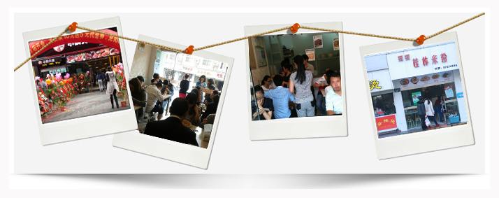

宁波阿拉桐餐饮管理有限公司是一家专业的整合
技术开发公司，主营时尚饮品、精致点心的产品研发，
品牌营销及招商加盟。公司已成功帮助上千位小额投
资者成功开店创业。公司以明确的市场定位、以点带
面的发展模式严谨经营。
阿拉桐桐隶属于宁波阿拉桐餐饮管理有限公司， 作为成功的本土连锁品牌，在现今各行商业圈都被圈 外企业占据的局面下，我们致力于突破客户"崇外" 的思想，以精挑细选的原材料制作出让客户满意的口味。
谁说米线（米粉）店就一定是低端、简陋的街边小店？谁说吃米线就是屌丝的专属格调？米线店也可以充满特色、 十分时尚。饮行业已经从传统的"味道竞争"转变成了"体验竞争"，作为食尚都市概念·米线（米粉）连锁品牌，阿 拉桐桐无论从其装修设计、菜单还是餐品上，都充满了年轻与欢乐的元素，让消费者在食尚优雅的环境中品尝风味绝 佳的米线、米粉及其他美味佳肴，食尚美食轻松享受。
阿拉桐桐隶属于宁波阿拉桐餐饮管理有限公司， 作为成功的本土连锁品牌，在现今各行商业圈都被圈 外企业占据的局面下，我们致力于突破客户"崇外" 的思想，以精挑细选的原材料制作出让客户满意的口味。
谁说米线（米粉）店就一定是低端、简陋的街边小店？谁说吃米线就是屌丝的专属格调？米线店也可以充满特色、 十分时尚。饮行业已经从传统的"味道竞争"转变成了"体验竞争"，作为食尚都市概念·米线（米粉）连锁品牌，阿 拉桐桐无论从其装修设计、菜单还是餐品上，都充满了年轻与欢乐的元素，让消费者在食尚优雅的环境中品尝风味绝 佳的米线、米粉及其他美味佳肴，食尚美食轻松享受。
